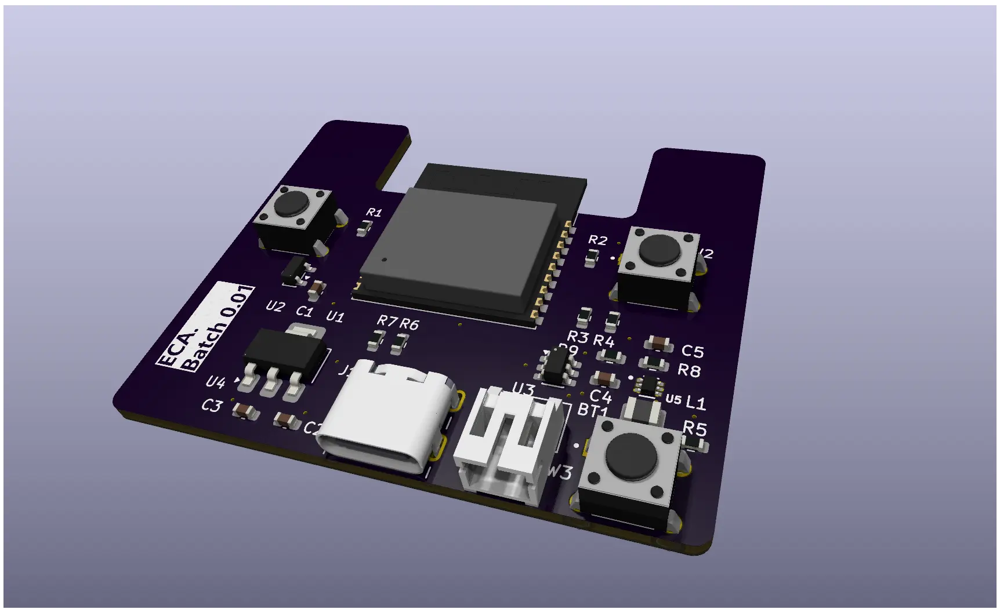
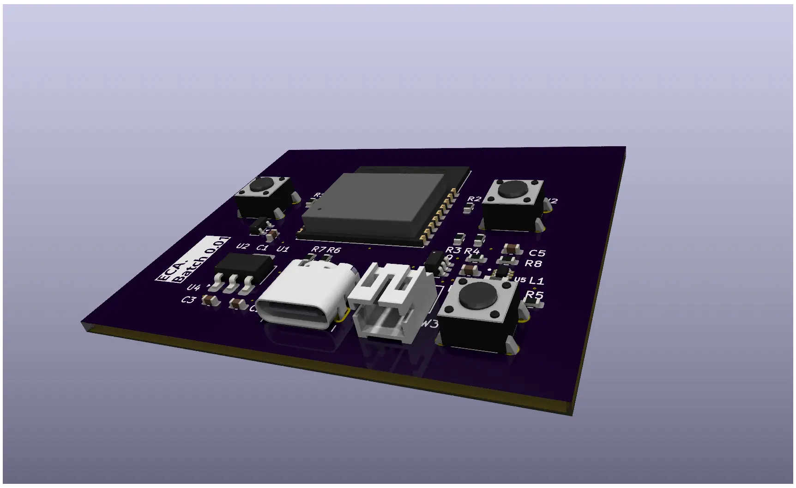
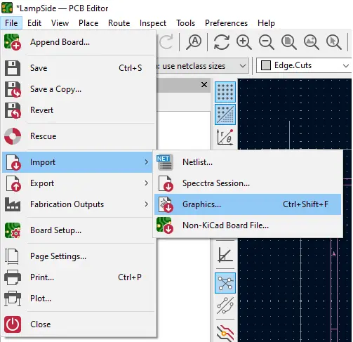
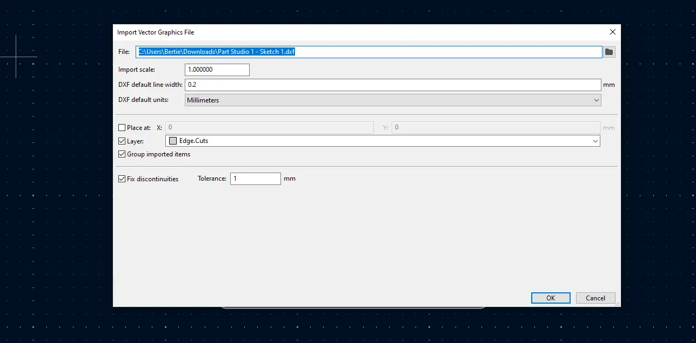
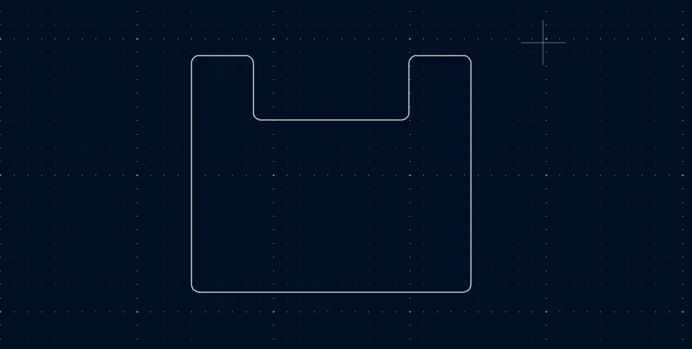

You’ve done the heavy lifting. You’ve calculated your component clearances, finalized your PCB space requirements, and designed a killer enclosure in your CAD tool of choice. Now comes the moment of truth: translating that complex mechanical design into KiCad to shape your PCB.
If you’ve ever tried to replicate a complex enclosure shape using KiCad’s native drawing tools, you know the struggle. You usually end up with a basic square or a circle—fine for a prototype, but a nightmare for a precision enclosure fit.

The Problem: The "Standard Rectangle" Trap
Most beginners start with a standard rectangular board because it's the default. However, a simple rectangle often leaves wasted space or, worse, physically interferes with the internal ribs and curves of a custom-designed housing.
When you transition from a "good enough" prototype to a professional product, you need millimeter precision to ensure your hardware lives comfortably inside its shell.

"Using a DXF import ensures that mounting holes, port cutouts, and rounded corners align perfectly—no more 'dremeling' the edges of your finished boards."
A Step-by-Step Guide to Perfect Outlines
Here is how to skip the frustration and convert your physical CAD dimensions into a KiCad board shape with absolute accuracy:
- Step 1: Export from your CAD Tool: Don't try to "eye-ball" the measurements. In your software (Fusion 360, SolidWorks, or Inkscape), select the sketch representing your board perimeter and Export as a DXF.
- Step 2: Import into KiCad: Open the KiCad PCB Editor. Navigate to the top menu and select: File → Import → Graphics...
- Step 3: Select Your File: In the dialog box, navigate to your exported DXF file.

Refining the Import
- Step 4: Sync Your Units: This is the most critical step. Ensure the units in the import dialog match your CAD drawing (usually millimeters). If these don't match, your board will arrive either microscopic or the size of a dinner plate.
- Step 5: Assign the Correct Layer: Change the Graphic Layer dropdown to Edge.Cuts. This tells KiCad this shape is the actual physical boundary.
- Step 6: Finalize: Press OK and move your geometry into position.

Pro Tip: The Closed Loop Rule
Lines on the Edge.Cuts layer tell the fabricator exactly where to mill the board. For the 3D viewer and the manufacturer to process the file correctly, make sure your DXF is a closed loop with no gaps between line segments.

Why This Matters for Production
When engineering for production, the relationship between the board and the enclosure is a first-class design requirement. Proper imports allow for:
- Perfect Port Alignment: Ensuring USB or DC jacks line up with enclosure holes every time.
- Optimized Thermal Management: Maximizing board area for heat dissipation within tight spaces.
- Reliable Assembly: Guaranteeing mounting holes are exactly where they need to be to avoid mechanical stress.